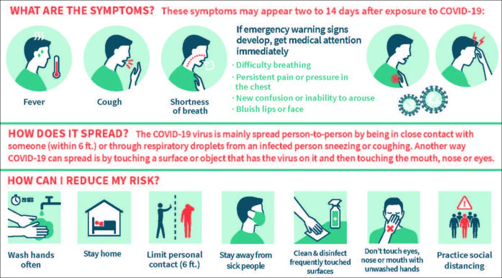
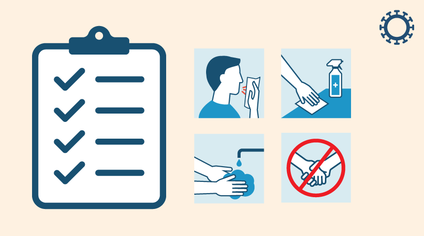
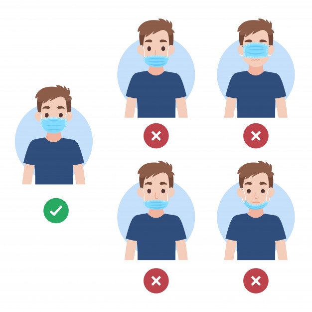
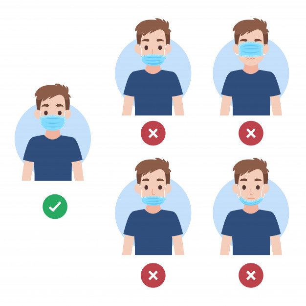

All About Covid
Everything you need to know on the global pandemic.
Table of Contents

Table of Contents
- What is COVID-19?
- Origins
- Progression
- Impact
- What's(Who's) Helping?
- one
- two
- What's(Who's) NOT Helping?
- one
- two
- How to Keep Yourself (AND OTHERS) safe
- one
- two
- What Now?
- one
- two
- three


- What is COVID-19?
- COrona
- VIrus
- Disease
- 19(2019)
- A strain OF a type of virus
- Coronavirus- The Family
- Viruses that cause illnesses from a small cold to SARS
- Some people call it “Coronavirus” due to its central role in current society
- "Novel" = New
- That just means it’s a new strain of the virus we’re not familiar with (has different effects)
- Fever/Chills

- Lots of coughing

- Shortness of breath
- Fatigue
- Muscle/body pains
- Headache
- Loss of taste/smell
- Sore throat
- Runny Nose
- Nausea/Vomiting
- Diarrhea
- DO:
- Make sure it’s not just a common cold or allergy
- Contact Doctor or Clinic IMMEDIATELY
- STAY INSIDE and isolate yourself as much as possible indoors/outdoors
- Limit outdoor activity
- Inform those around you who’ve had contact with you so they can be tested
- DON'T:
- Disregard it. Better safe than sorry.
- Go outside whether or not it is CONFIRMED you have Coronavirus
- Be a fucking idiot, say “lmao who cares”, and go out anyway, because at this point not only are you endangering others and yourself, you’re just being a dick.
- Direct Contact
- Person-to-Person close contact (less than 6 feet)
- The closer people are, the higher chance of infection
- Surface-to-Person (touch an infected surface and then their own mouth, nose, eyes)
- This includes tables, counters, bags, boxes, containers, etc.
- Animals-to-Person (contact w/ infected animal, low risk)
- Food-to-Person
- The food you buy from supermarkets all run a risk of being infected, especially food that does not come in a container, such as produce(fruits/vegetables). For safety, it’s best to wash all purchased food and use a disinfectant wipe, then leave it to dry, or, if the food comes in a container, take the food out of it.
- Respiratory Contact(aka from the Mouth/Nose)
- Sneezing
- Coughing
- Talking
- Doing anything else with your mouth that involves an expulsion of liquid
- Spitting, licking, etc.
- Avoid contact with other people
- Sneeze/Cough INTO your arm
- Wash your hands often (especially after you go outside)
- Make sure to wash under nails too, clean everywhere
- Avoid touching your face when making contact with surfaces outdoors
- Inside: Isolate yourself from people confirmed to have the virus
- Outdoors: Keep a safe (6ft) distance from other people (who do ot live in the same house as you do)
- Standing too close to others
- Crowded areas
- Wear a mask outdoors
- Wear it the RIGHT WAY
- This point is highly important due to the Respiratory Contact mentioned above. (cit sources of no mask people getting otehr ssick here)
- Even with a mask, still maintain social distancing
- Constantly monitor your health
- If you begin to have symptoms, ensure that it IS the virus (and not a false positive), then immediately contact doctor/clinic
- Origins
- Late December 2019:
- Wuhan, China: The first signs of the virus show up in a seafood and poultry market in Hubei province
- (insert map of Hubei province/picture of seafood market here)
- Dec. 31st:
- China’s government confirms that health workers were treating numerous cases. A few days later, it’s identified that the virus ha infected many people across Asia, the main symptoms being a fever and shortness of breath, but since there was no evidence present that the virus could be spread among humans, all health officials could do was monitor it to prevent it from developing further and investigate the origins of the virus.
- Progression
- January 2020
- China reports its first death from the virus, a 61-year old man who was a regular at a market where it first originated. The patient in question had been suffering with shortness of breath and pneumonia. Unfortunately, this occurred around one of the worst times for a virus like this, where many Chinese travel across the country to celebrate the Lunar New Year.
- China’s transport ministry announces greater measures to prevent transmission of disease during the Lunar New Year’s hectic 40-day travel period (disinfecting transportation vehicles)
- Additional potential cases are reported in other places (Hong Kong, South Korea, Taiwan) due to the influx of Chinese travelers
- The first confirmed cases outside of China are reported in Japan, South korea, and Thailand. The following day, the first case in the US is confirmed to be a 30-something year old man in Washington State returning from a trip to Wuhan.
- While many patients in China had made contact with the food market in Wuhan, this patient reported that he was merely travelling through, having not visited the market at all.
- This new case leads the CDC and the Department of Homeland Security's Customs/Border Protection to roll out “enhanced health screenings” at airports that receive most of the travelers from Wuhan, starting with SFO, JFK, and LAX. It also confirms that person-to-person spread of the virus is occurring
- Chinese authorities forcefully closed off Wuhan in an attempt to prevent further spread of the virus, suspending all transportation services operating within it, effectively putting the city into lockdown, with planes and trains going in and out of the city being cancelled.
- With this sudden lockdown, some civilians feel safe and have faith in the government's action, while others are in a panicked state due to the decline in essential resources and everyone in a rush to buy goods, stating that the residents need to be able to live and eat normally.
- Mandatory mask-wearing is put into place.
- With a huge surge in cases in China, the World Health Organization (WHO) declares a public health emergency, meaning the virus has become widespread enough to expand internationally and has to be responded to in a coordinated manner.
- China’s Foreign Ministry says that it would continue efforts with the WHO and other countries to protect the public. The US state department warns travelers to steer clear of China.
- With the WHO’s declaration, efforts begin to gather financial and political support to suppress the virus
- February 2020
- A 44-year old Chinese man in the Philippines who recently flew in from Wuhan died of the virus, marking the first official death outside China.
- Death Count: 305, Infected: 14,300(globally)
- US, Australia, and New Zealand announces barring of foreign nationals from entering the country. Citizens who have visited China are permitted, but they will be quarantined
- Numerous countries have evacuated and quarantined many of their citizens. Airlines suspend flights to China
- China: Hubei Province remains under lockdown, hospitals are being constricted, situation remains volatile
- (insert pic of cruise ship here)
- 3,600 passengers on the Diamond Princess cruise ship in Yokohama, Japan are placed under quarantine after a two-week trip with stops in Hong Kong, Vietnam, and Taiwan.
- By Feb. 13th, 218 people on the ship test positive.
- After Wenliang, a Chinese doctor, died of the virus, he was seen as a hero who made valiant efforts that the virus infections could skyrocket when it was still in its early stages. However, the authorities forced him to retract hsi warning. His death led to a frustrated reaction at the Chinese government's handling of his statements.
- Specifically, the Chinese government had mistakenly declared Wenliang as dead, then alive, then declared his official death, invoking an emotional response of outrage from shocked citizens who demanded the right to free speech.
- WHO gives the virus an official name: Covid-19. Avoid any potential stigma, it merely references the disease and the year.
- Death count rises to 1,113 in China, 393 outside. Confirmed cases: 44,653
- The first casualty to the coronavirus, an 80-year-old Chinese tourist dies, marking the fourth death outside China and in Europe.
- After two weeks of quarantine, operations began to release people who had tested negative and did not show symptoms. This day, 443 passengers left the ship; however, around 623 other passengers are confirmed to be infected.
- Along with those passengers, those that shared a room/had extensive close contact with the infected were also required to remain on the ship.
- Criticism came from the fact that the ship had become a major hotspot for the virus, and evidence suggests that some who were let go may still carry the virus.
- A cultist church in South Korea, the Shincheonji Church of Jesus in Daegu, was connected to a rise of infections, bringing the number of cases above 200 with 152 new cases, with 400 other members alleging symptoms. These cases can be traced back to a woman in her early 60s.
- As a result, the government shuts down many places where many people gather (kindergartens, nursing homes).
- Italy’s cases grow from less than 5 to more than 150.
- Numerous twins go into lockdown.
- The government integrated containment measures on infected towns.
- After announcing its first two cases 5 days prior, the country’s cases rose up to 61 and 12 deaths, numbers only second to China.
- Health experts warn that Iran’s spike in cases is cause for caution, due to many crossing its borders every year for religious pilgrimages, migrant work, and other causes into other places, implying that there are numerous other cases from Iran.
- Lo and behold, numerous cases in other countries (Iraq, Canada, Oman) have been traced back to be from Iran.
- Other reasons why Iran Other reasons why Iran is a dangerous case:
- Due to economic and political isolation and instabiliuty, citizens are uninformed about the full details of the epidemic.
- Years of civil war have crippled health systems and services
- Neither religous services nor government warnings have successfully limited the amount of people in one place
- A 61-year old man in Sao Paulo, who’d recently come back from a trip to Italy, tested positive for the coronavirus.
- Officials began to track down those with him on the flight and others he may have had contact with recently
- A 50-year old patient near Seattle, Washington who had been diagnosed with the virus in Wuhan dies, marking the first casualty of the US.
- Ths U.S. issues more travel restrictions and warnings
- Community Spread: someone is infected but the source of said infection is unknown
- The infection source of the 4 cases of the U.S. are not known
- March 2020
- Following failures to produce a test kit aht could be distributed nationwide, the C.D.C lifts all restrictions on testing
- Death Count: 90,000+ infected cases (globally), ~3,000 deaths
- In this death count: Spain reports its first death as a man who had died a month prior, now confirmed to have been killed by the virus,
- Following a spike of cases on March 5th, the Italian Prime Minister signed a decree placing the people of northern Italy under a strict lockdown.
- Only essential/health workers are still allowed to move around
- As this lockdown is spread to other countries, non-essential businesses, such as schools, theaters, and cinemas, wil eb shut down.
- Trump announces plans to bar travelers from certain European countries from entering the country for 30 days.
- The 26 European countries in Question are Austria, Belgium, Czech Republic, Denmark, Estonia, Finland, France, Germany, Greece, Hungary, Iceland, Italy, Latvia, Liechtenstein, Lithuania, Luxembourg, Malta, Netherlands, Norway, Poland, Portugal, Slovakia, Slovenia, Spain, Sweden and Switzerland.
- A two-week limit, which states that those who have been in any of those countries in the past 14 days are banned from coming in, is imposed.
- The EU heavily criticised this move, emphasizing the action they are already taken against the endemic and that this crisi requires cooperation, not isolation
- The WHO officially declares the coronavirus a pandemic.
- Global spread (although this can be a subjective term, depends on what is seen as a "global pandemic")
- Virus can easily infect and spread across people
- Trump declares a national emergency across the country in order to give $50 billion in funds to give to states and territories to combat the virus.
- He does this by enacting the Stafford and National Emergencies Act to unlock executive power to respond to the virus
- Allows president to declare “national emergency” at their choice of time
- Gives them permission to execute laws that allow the president access to otherwise restricted things, such as funds and also to modify funding distribution without restriction.
- A national emergency can, and has been, declared annually
- Mobilizes funding set aside for a national crisis, allows FEMA (Federal Emergency Management Agency) to provide direct help to state and local governments and coordinate nationwide action
- Cuts off restrictions and allowed for faster provision of resources at the local level
- The CDC puts out a statement advising no gathering of 50+ people, effectively shutting down events like wedding, festivals, concerts, conferences, and other events
- They advise to either cancel entirely or reschedule and guarantee protection through hygiene and social distancing
- Although this doesn’t apply to schools, many have still shut down to protect students from the virus, such as New York’s publi8c school system.
- Latin American countries put restrictions on their citizens in place to try to combat the spread of the virus, such as shutting down cities and transportation centers.
- Various countries (Venezuela, Colombia, Peru) announce new measures, such as quarantine of citizens, shutdown of social gatherings, widespread curfew, and total lockdown of the country.
- For the first time since the virus broke out, China has reported no new local cases. All reported cases in the past 24 hours are from overseas.
- While this does provide credibility to China’s measures to combat the virus, it shouldn't be ignored that such measures have had a heavy impact on the economy and the people.
- Prime Minister Johnson imposes strict restriction across the whole country.
- He adds the only acceptable reasons to leave home are for shopping for basic needs, exercise (Once per day), to provide medical services (doctor/nurse), or if one is an essential worker.
- He also adds that these restrictions will be heavily enforced, warning that those that break the rules will be fined, and that police also possess the power to break up public gatherings.
- Officials announce the Tokyo Olympics would be cancelled, amring this the 4th Olympics to be cancelled
- A day after domestic flights were cancelled, Indian’s prime minister declared a total 3-week lockdown. This was an urgent matter, as experts warned that due to India’s dense population, procedures that worked in other countries may not work here. To help with getting through the virus, the prime minister pledges $2 billion towards medical resources and training.
- The US officially becomes the leader in number of confirmed cases and deaths, with its 82,404 cases outnumbering China’s 81,782, Italy’s 80,689, and every other infected country
- This is mainly due to a series of mistakes the country took, such as not taking the outbreak seriously, a lack of effective testing/protective medical gear, and instead focusing on trivial matters
- Trump signs a $2 Trillion bill to comab the pandemic and provide funds for relief and support for workers and businesses economically impacted by the outbreak.
- This bill, marking the largest emergency aid fund in US history, faced some drama near its approval when Rep. Thomas Massie of Kentucky attempted to derail plans to pass the bill via voice vote, a more safe option amid the pandemic which would be safer for all the house members, by threatening to request a full roll-call vote, forcing many to travel amid the lockdown. Fortunately, he failed to get his request garnett, and the bill was passed via voice vote as planned
- April 2020
- The number of cases passes 1,000,000, with the death count simultaneously reaching at least 51,000.
- At this point, it also spells big trouble for the economy, as lots of businesses have stopped activity due to stay-at-home and social distancing orders, leading many to lose their jobs and file for unemployment, marking the highest number of unemployment applications since 1982. Additionally, with so many businesses shut down, the economy is projected to be heavily crippled in the future.
- A huge increase in infected cases in Russia occurred, bumping up their infection count to above 10,000.
- This sudden increase in cases is pushing Russia’s health system to its limits, with numerous hospitals filling up quickly and working intensely, and long lines of ambulances up outside of hospitals
- The International Monetary fund predicted that the world’s economy would shrink by 3%, greatly affecting economic services and activities such as healthcare services, shopping, and savings. They warn this to be the worst economic downturn since the stock market crash of 2008-2009 and even the Great Depression in 1929-1939.
- In order to combat this, they indicate that policies are needed to sufficiently support heavily affected households and businesses in the aftermath of the pandemic, and also to prevent any further economic degradation. They also indicate that cooperation among countries to help one another with economic stability and health care is needed as well.
- Policies are also needed to help support people and businesses when faced with the inflated taxes and rates due to the virus’ economic crippling.
- Officials in Santa Clara County, CA, announced that two residents had previously died of the virus on February 6th and 17th, making them the earliest known cases in the US. This new info changes the timeline of the virus.
- At a White House briefing, Trump suggests that injecting oneself with bleach could combat the virus. After multiple reports of people taking this seriously and believing it to be true, the makers of Clorox and Lysol, as well as other bleach-related products, stepped in to deter Americans from ingesting their products.
- Whether or not he was joking is a highly contested point, but this website is to inform about the Coronavirus, so political debates will be avoided as much as possible
- (Insert Internet Comment Etiquette Video on situation here)
- Cases in Brazil see a major spike, with over 11,000 new cases reported in the past 24 hours, as well as around 800 deaths.
- Brazil is now only second to the US in terms of infected cases
- The pandemic’s death count passes 200,000, and its infection count passes 2.8 million.
- The US is still in the lead
- Numerous airlines, including American Airlines and Delta, announce that all passengers and flight attendants are required to wear masks before, during, and after the flights.
- This was done in an effort to prevent further cross-continental spread of the virus
- May 2020
- Due to China’s earlier actions of covering up the virus when it was in it infancy, such as the silencing of Li Wenliang, and other mishenaldings, global backlash begins to accumulate rapidly against the country as other countries turn against them, leading to high levels of mistrust and tension between China and others.
- Australia calls for a reexamination on the virus’ origin. Britain and Germany are now hesitating to install the giant Huawei tech towers from China across the country. Trump continues to stand by the accusation that China is responsible for the outbreak. Even still, more governments are demanding reparations from Beijing.
- This level tension between the US and China was last seen following the 1989 Tiananmen Square Incident, and with China having more military power than back then, the backlash has made cooperation volatile.
- French doctors discover that a patient (a 43-year old man who possibly contracted it from his wife, who works at a supermarket near the airport) treated in late December possibly had the coronavirus, pushing back the timeline to even further before China reported it.
- If this case isn’t a false positive, then it spells out dire news for Europe, as the virus may have spread a great deal before it was officially declared a threat.
- Several countries lift lockdown restrictions. However, the results vary.
- Korea, China, the US, and Germany reported in influx of cases following ease of restrictions
- Countries are gradually repairing some (not all) businesses and permitting SMALL gatherings, such as Spain, Italy, UK, and France. Despite this, all countries warn the residents to maintain awareness and still keep safe of the virus.
- Dr. Mark Ryuan, head of the WHO’s health emergencies program, warns that the virus may become a regular occurrence, but just as dangerous as it is now.
- He also dispels speculation that a vaccine equals a quick and easy end to this pandemic, as he says that for a vaccine to be a solution, it must be effective AND available to the mass public. He also warns that with some viruses (like measles), just because there’s a vaccine to combat it does not mean it will disappear.
- Additionally, he dissuades any wishful thinking that it will be an easy road to get out of this virus, stressing that the "magical thinking …. that lockdowns work perfectly and that unlocking lockdowns … are fraught with dangers."
- Both Japan and Germany see major economic shrinkage of 3-4% and 2.2% in the first three months of 2020 respectively, signifying a major economic recession for both countries.
- This had major effects on the industries, as major institutions in both countries aw major downfall in profit, such as Japan’s private consumption; For Germany, however, it should be noted that their construction business has been keeping the economy from falling further apart
- Brazil’s reported cases reach more than 330,000 and more than 20,000 deaths, with Peru and Chile being some of the most infected countries, and Ecuador suffering one of the worst outbreaks.
- This surge in cases sheds ight on the inefficentactions o the presidents, lack of effective testing, and the weakness/corruption of the police force. It also doesn't help that some presidents, such as Brazil’s Jair Bolonsaro and Mexico’s Andres Manual Loez Obrador, did not see the full seriousness of the virus, leading to a surge in infections in their areas.
- This also pushes the number of cases past 5 million, with over 328,000 deaths as well.
- In the US, the number of deaths passes 100,000. This number mainly encompasses the elderly, although some kids have unfortunately been included in this count. This death toll is the highest out of all the infected nations.
- After two months of lockdown, the country decided to ease restrictions. Unfortunately, this was the worst time to do so, as cases were at a record high. with rising infections, villages across Northern India experienced major outbreaks. Almost half of the cases were traced back to major cities where hospitals were overflowing with infected patients.
- The previous backlash China experienced for its ineffective and suspicious actions at the start of the outbreaks reaches a climax, as Trump announces the US will leave the WHO due to suspicions that the WHO and China were cooperating behind the scenes, pointing responsibility for the deaths of the Americans to China.
- Following the death of Geroge Floyd, an African-American man, at the hands of the Minneapolis police, mass protests against police brutality against black Ameircans begin to erupt all over the country in various cities, marking a volatile and dangerous situation, as with so many people gathering in one spot to protest, numerous concerns arise over a surge in infections.
- Atlanta mayor Keisha Lance Bottom urges protesters to also get tested for coronavirus as well, as she reminds them that "There is still a pandemic in America that's killing black and brown people at higher numbers."
- June 2020
- New cases are popping up faster than ever, at a rate of 100,000 cases a day. The ones hit the hardest were countries with dense populations in the MIddle East, Latin America, Africa, and South Asia.
- Although the increase in cases can be explained by the increase in testing capacity, it still fails to capture the full scope of the infections in many countries.
- Moscow’s lockdown, having ended with Putin’s rule extended, reopened beauty salons, barber shops, and other businesses.
- While, like India, this does seem like a bad time to do so, as this occurred when more than 1,000 cases were being reported daily, this actually marked a steady decline of reported cases in the city and some of the lowest daily tallies since april, making lifting lockdown a possibility.
- However, officials also warn that now is not the time to get complacent with protection so that the public can continue to enjoy the new freedoms outdoors.
- In just 18 days, Africa’s cases doubled to 200,000. This can be explained by both an increase in testing and a great deal of the countries experiencing surges in community-based spread. Certain countries accounted for almost 80% of all cases
- These cases can be explained by an increase in testing in certain countries and easing lockdowns without proper procedures to keep the virus in check.
- This spread of infection is cornering in Africa because healthcare systems/facilities in rural (and especially poor) areas do not have a big reach and capacity, and testing capability in many countries is still small.
- Scientists at the University of Oxford claim they have identified a possible drug to reduce coronavirus deaths, the first one to raise survival rates against coronavirus.
- A trial of dexamethasone, a low-cost steroid, reduced deaths of hospitalized patients by a huge chunk in the UK. This drug, part of the clinical trial RECOVERY, proved successful. ⅓ patients on ventilation recovered, as did ⅕ of those on oxygen treatment.
- Many of the professors are pushing for dexamethasone to be shelved in businesses/stores worldwide so it can save lives as soon as possible and because it is cheap to manufacture.
- Outbreaks in already infected countries continue to rise, pushing the infection count even higher. 140,000 cases were reported on the 16th, with 166,000 more the next day.
- Over the past two weeks, there are more nations that have seen an increase in cases than those that see a decline.
- Numerous countries, such as Peru, Brazil, and the US, have seen major increases in cases.
- The global death count passes the 500,000 mark, and the confirmed case count passes 10 million.
- This can partially be seen due to the US and UK lifting lockdowns too early, and numerous US states are hit with a huge uptick in cases with less restrictions. Of course, Florida is among them.
- The EU announces plans to reopen borders to visitors from certain countries, but countries that have seen a surge in cases, such as the US, Brazil, and Russia, are still barred from entering.
- July 2020
- Dr Anthony Fauci, the nation’s top expert on disease, gives a warning that the country is in serious trouble, with 50,000 new cases a day and nearly 130,000 deaths.
- Stressing the fact that the US was still “knee-deep in the first wave”, he urges people to avoid crowds and social gatherings, as the numbers have not declined as muchas as they’d hoped.
- The Trump administration gives the formal withdrawal of the US from the WHO to the United Nations, which would take effect this time next year. This effectively cuts off the country from their biggest aid.
- Brazil’s President, Jair Bolsonaro, discloses that he has tested positive for the virus, this coming after months of disregarding the pandemic’s severity on the country and his denial of its impact, which can be seen in a lack of protective measures.
- Impact
- Buisnesses
- Many employees were laid off/businesses had closed down. The reasons for this include a lack of demand, employee health concerns, and reduced employment dueto fear of the virus. Although businesses have been gradually recovering since the lockdown began, none have been able to get back to the number of employees and locations, as well as working hours/conditions they had before, and they are still struggling financially.
- There has been a varying degree of impact on businesses, as some (retail, food delivery, restaurants) heavily struggled with moving to remote operations, while others (finance, real estate) had an easier time or have been required to remain open as essential businesses (hospitals, grocery stores). Some have reported temporary closure, others have reported a permanent closure, and still others report remaining operational (albeit with modified operations).
- Insert Picture of Graph here
- The financial instability of many businesses forces many of them to draw on what remains of their funding. The less funds a business had, the less time it was projected to remain operational, and this also resulted in fewer employees and locations.
- The Coronavirus Aird, Relief, and Economic Security(CARES) act, which promises loans will be waived if used for payments, mortgages, rent, and utilities, is put into place to provide necessary support. Businesses seeking support through the act still have problems or predict having problems with getting access to the program. Many seek the aid for future decisions such as laying off employees and remaining operational.
- The Demographics
- The Elderly
- Older people, being the most vulnerable to the coronavirus, are also vulnerable to a lack of care. If integrated incorrectly, social distancing measures can also cut off the elderly from both social and medical support they may need to live.
- This significant vulnerability to the coronavirus, however, has also led to a developing stigma of old people being weak and useless to society. This discirmination has manifested itself in the form of protizong healthcare services for the young over the old, increased isolation, and unequal opportunity for healthcare. In addition, this age disciminaion can also cut off the elderly’s access to important services and resources, resulting in increased isolation, which can prove detrimental towards their mental health, and a lack of foodstuffs, both leading to higher mortality rates.
- The pandemic also renders eldelry people who are unable to be fully independent vulnerable, as close relatives may be a part of their daily lives, helping them with everyday tasks such as getting dressed or paying bills. Additionally, care workers also face a dilemma when helping the elderly, as the essential help they provide gives great risk to spreading the viru.
- The Disabled
- Those who are disabled require more healthcare services than others, which can lead to an increased vulnerability and poor health if health services are inefficient and unavailable to them (due to either prioritization or discimination). The disabled, as a result, are more likely to have decaying health at a time like this.
- Self-care hygienic measures, such as personal hygiene and surfacer cleaning, may be more difficult to perform for a person with disabilities than a person without. Services that would usually help the disabled (now including drive-up testing) are cut off from them during the pandemic, so they will not be able to take measures to protect themselves (Cleaning the house/washing hands). Communication is also a problem, as certain disabilities may make it difficult or near impossible for people to receive important updates on the pandemic.
- Some may not be able to even socially distance themselves, as theri impairments may require constant help and support to perform tasks.
- The Youth
- During this time of social isolation, the youth have also been greatly affected. With many businesses and industries shutting down, this unemployment will impact the youth greatly, as they are already 3x more likely than adults to be unemployed, and this current situation will only make that worse. In addition, this will also reduce the quality of jobs that young people can still get (lower/reduced pay, more complicated work environments). To top it all off, youth whose job requires them to work in-person are at higher risk of contracting the virus.
- As the youth bear witness to actions being taken in the midst of the pandemic, they have developed a distrust of current institutions and their actions, resulting in many youth disobeying their warnings. Due to their excessively casual outlook on the pandemic from a reportedly lower risk and a disregard of warnings, an increasing number of young people have been reported among the infection and death count. This current state of affairs has also prompted many of them to begin to contemplate big questions regarding morals, mortality, and meaning.
- Social distancing also has a big impact on young people’s social developments, as due to their desire to make new social connections outside of their family, some youth may be unable to comprehend the full significance of the virus. Their inability to make new connections also hampers developments of social skills/understanding and self-reflection, which may lead to many students having setbacks in educational and social skills.
- The pandemic also has a disproportionate effect on young people in lower-income communities, as with lack of food, unstable housing conditions, loss of income, and more death and illness, these issues are only further worsened as young people in these communities are barred from receiving support in the form of technology and communication, as well as isolation inside an environment that may be violent or abusive.
- The Environment
- The Good
- The stay-at-home orders have reduced the amount of people traveling outside, leading to high reductions in air pollution and greenhouse gas emissions from vehicles and factories.
- The lack of tourists that has resulted from the stay-at-home orders has led many beaches’ previous pollution and contamination problems to disappear, allowing for crystal clear waters and litter-free beaches.
- The Bad
- An increase in organic waste has been seen. Many recycling plants have suspended activity out of fear of spreading the virus, adn a lack of cargo transportation has resulted in un-shippabel agriculture and fish products. Producers also export too much goods. Many food retailers have switched back to plastic bags, while consumers have seen ana increase in the amount of take-out and delivery food ordered, which further contributes to produced waste. Due to this waste, levels of methane and greenhouse gases from decomposing produce are predicted to rise greatly.
- Natural ecosystems in national parks and land have been forced to be left unmonitored, resulting in hazardous actions such as illegal deforestation, fishing, and hunting.
- The Responses
- U.S.: Too Slow
- The US saw a major spike in cases, which kept on rising. This shows that their preparations were too little, too late.
- Lack of PPE(personal protective equipment) due to a quickly drained stockpile, putting many citizens at risk
- Although the country may have surpassed the number of tests in other countries, this only occurred a few months into the outbreak, and thousands of victims have already been claimed. The US undelivered on the quantity of tests it would distribute.
- The country also suffered a major employment and economic decline, with new records being set for the most filings for unemployment (1982) and for economic downturn (Great Depression)
- As the country is very decentralized, the responses within the country itself were contrasting, and the lack of a nationwide agreement on how to proceed with putting lockdown measures into place further contributed to the spread.
- Inconsistent/differing statements on what to do from numerous authorities and conflicts between said authorities led people to instead follow whatever statement aligns with their values the most.
- This has resulted in further dissonance, as some have chosen to outright reject the coronavirus as an actual risk, while others remain cautious against the virus.
- They were also slow to implement efficient and nationwide testing, possibly due to the many fanatics that are rejecting the warnings from scientists and health officials and utilizing other “treatments” or continuing to attend public gatherings (churches), risking further spread.
- That’s not to say, however, that the country did get some things right. They were able to supply ventilators for thousands of patients, and provided more capacity on their feet when hospitals began filling up.
- China: Way Too Much Censorship
- China has received some criticism for the slow response to the outbreak and suspicions of their honesty when it came to tallying the total number of cases.
- Their attempt to cover up those who spoke about the severity of the virus, such as Dr. Li Wenliang, only created further ire against them.
- It also didn't help that many young people still went out to parties and spread the virus further onward to their families.
- Later on, however, they took more positive action, implementing widespread and strict lockdowns, cutting off all movement in and out and within the country.
- However, China’s earlier delay of the lockdown plan and their sudden censorship of important information is not forgotten at this point.
- A Mishandling of Information
- Deletion of posts/accounts/articles calling out the chaos and instability in China from social media platforms (WeChat)
- The Chinese government’s cover-up, however, only led to further disaster and spread, as the censorship of the people’s suffering resulted in many citizens not understanding the severity of the virus.
- They also attempted to make it seem like when Zhong Nanshan, a Chinese disease expert, revealed the truth of the virus, the CHinese government would respond with open and swift efficiency, allowing major news organizations to report on the situation. However, as soon as these news organizations began indicating the initial inefficiency of the government’ response, China immediately went back to censoring the flow of information (including expelling all foriegn news reporters from the country).
- Many reports from the frontline by doctors lamenting on how they were forced to obey orders not to share important information, as well as investigations revealing further acts of censorship of information from the Chinese government that threatened to ruin their image were deleted. Censorship of ordinary social media users, who expressed pleas, grief, and desperation, was even more rampant.
- This all came to a head after the incident with Dr. Li Wenliang occurred (see Progression, Feb. 7th), invoking the wrath of the citizens as numerous demands of freedom of speech and calling out China’s censorship flooded the Chinese internet, leading to ramped up efforts of censorship, culminating in a war between the people who wanted freedom of speech and the government who sought to censor these demands.
- China touts the image of them as a global leader with highly successful quarantine measures; however, their attempts to falsify an image of stability have brought their censorship to other nation’s attention
- After its economy suffered a major contraction due to the lockdown, China was hesitant on initiating a global recovery, as in the time since the last economic crisis in 2008, the government debt has doubled, and many are reluctant to spend so much money this time.
- Japan: Thank Their Customs
- Initially, Japan’s response to the coronavirus was not very well thought out, with accusations of disregarding the threat the virus presented and inefficient mesures, such as the Diamond Princess lockdown and testing too few people. In addition, there was also the shaky actions of prime minister Shinzo Abe, whose performance in the pandemic has been questionable, with lackluster communication and safety measures, and a lack of legal power to implement a lockdown
- However, it wasn’t Abe’s measures, but rather Japan’s customary (personal and cultural) measures and habits, such as bowing, the removal of shoes when entering a household, universal healthcare, and general habits of the Japanese, that have allowed for the decrease in infection numbers
- Japan was also quick to close down mass gatherings such as museums, theaters, and sporting events.
- It shouldn’t be forgotten, however, that Japan’s economy has been hit very hard, and extensive measures, including a $1 trillion relief package and cash packages to citizens, are being taken to maintain the stability of employment and people’s lives.
- Europe: Zero Coordination
- European country's response to the pandemic was mainly inefficient and non-focused. Many leaders went on trips and made physical contact, and UK politicians had their main focus squarely on Brexit, despite having a well-informed population and a good healthcare system. Europe also didn’t ban trans-state movement or account for the hospitals’ inability to handle this new virus, and failed to coordinate a safe and effective response that worked across all the countries.
- Initially, the ECB (European Central Bank) had a slow response to the outbreak. However, they soon buckled down, launching new measures to keep the economy afloat, such as the Pandemic Emergency Purchase Program, that buys up national debts, which means that when they buy these bonds, interest rates will lower. This will help governments to continue economic activity, creating jobs and growing the economy.
- The effect the virus has on European countries differs across each one, causing internal conflict among them. With each country having a different status on financial wealth and the capabilities of their health systems, the response lacks uniformity, with some countries being able to provide more emergency funds than others. The countries also struggled to come up with a unified plan, eventually settling on a stimulus package to support states, companies, businesses, and workers (for those who have lost their job/ a significant cut of their paycheck).
- Most of the countries have now closed down travel and schools/major gatheirngs and implemented lockdowns. However, the measures they put in place still vary from country to country.
- Korea: Different Sides
- North: The Propaganda Speaks For Them
- North Korea has touted that with their swift and efficient measures, combined with their already restrictive laws on movement within and in and out of the country, there are no coronavirus cases. This resulted in high levels of propaganda, including photos of citizens wearing masks and practicing social distancing and workers wearing protective gear, being thrown around to show the strength of Kim Jong-Un’s leadership and protect his reputation.
- However, based on its location between China and South Korea, which both have thousands of cases, as well as reports of the North Korean military having seen numerous deaths and a state of lockdown, this claim of “zero cases” and no fatalities is highly doubted to be true.
- On the side, the government secretly asks for help from the WHO and Doctors Without Borders, as they recognize the country’s weak public health systems/testing capabilities and the malnourishment of almost half of the population.
- South: Rocky Start, Awesome Finish
- The initial response to the outbreak in South Korea was less than satisfactory, with the leading administration struggling to get a hold on handling the crisis, as evidenced by the inconsistent statements from the government and controversy over how they handled the Shincheonji Church incident as well as a party the main administer Moon Jae-in hosted for the success of the film “Parasite”. All of this contributed to the sense that the government had little control over the situation.
- Later on, however, the government managed to get it together and started to combat the outbreak. In late January, Seoul issued an order to 20 medical companies to begin rapid production of tests with promises of fast approval, and this later progressed to shipping tests all over to where they were needed, as well as a complex network of healthcare institutions (hospitals, clinics, testing kiosks). This led to relatively low rates of infections within the country.
- Soon, South Korea was being praised for its model of efficient measures taken, especially its openness and capability and its ability to keep the public safe without widespread travel lockdown. The government had given out tests for more citizens than the US had.
- Many countries, including the US, are requesting advice and help from South Korea, which plans to export its successful test kits to countries around the world.
- These two responses are to be expected given the two countries’ different environments. North Korea, an oppressive dictatorship that jousts the idea of a holy supreme leader and a hostile outside world, is sure to have a radically different response than South Korea, a civil and free-speaking society with high connectivity and education.
- Africa: A Time For Innovation
- The response across the countries in Africa have seen varying success, with some leading in testing capabilities and other ways. Many countries have used this outbreak as a way to improve upon existing healthcare protocols, integrating better response time and modern technology that can help in this time of crisis, as well as implement lockdowns to varying degrees.
- For example, Rwanda acted fast when its first cases were recorded, closing down schools, sending out officials to screen people for infection, and setting up hand washing stations at places where many people would gather. In addition, they also took too sensitive measures to provide food and other necessities to the especially vulnerable people. They also announced a 2-week quarantine which soon extended into a total lockdown of the country. In order to encourage as much isolation as possible, Rwanda promotes digital transactions and online shopping, as well as a relay system for transporting goods and a permission system for people to leave home for essential needs.
- Also, Senegal implemented total lockdown and screening booths and response teams, but faced some initial resistance over religious centers being closed. Data shows that rural areas have seen less infections than urban ones. Senegal has also seen higher recovery rates thanks to its efficient treating plans, and plans are being made to develop a quick and cheap diagnostic test to deploy across Africa. The government also created a fund to support those affected majorly by the outbreak, and an app that tracks distribution of food and PPE is in development.
- Numerous other countries, including Ghana and Kenya, have implemented new technological innovations to help people in social isolation, whether it be producing PPEs or spreading awareness. They’ve also launched virtual learning platforms over broadcasts, televisions, and other sites.
- Middle East: Quick Response
- With rising case numbers, many governments in the Middle East took initiative and enacted lockdown over the millions of people living there. Their quick containment measures, including declaring a state of national emergency that stopped movement across the countries, suspended religious pilgrimages/gatherings, led to lower death rates. Although the level of success varies across the region, the general trend with Middle Eastern country’s measures success in containing the virus.
- Many countries have introduced new technology, such as virtual doctors and sanitizing robots, or made important decisions, such as increasing mask production.
- Governments have also been forced to make decisions to help support at-risk communities, showing efficiency in implementing protection and preparing stimulus packages for those out of work in the country. They also created new structures to improve coordination between institutions, technical and scientific boards to monitor and assess the situation (which includes ensuring support for families though goods/services and compliance of the people ifn following safety protocols), and the movement of public services to digital platforms. These digital platforms were also used to spread awareness and promote safety measures through videos with famous actors and influencers and websites that serve to provide the important information and how to keep themselves safe. Also, governments put in measures to keep the acquisition of necessities at the same growing rate as the needs of the people, such as enforcing important institutions and reminders to the public of the limits when buying imported goods.
- Additionally, as the death rates begin to lower, many countries have begun strategically relaxing lockdown measures, whether it be in steps or division of areas, as well as starting to reopen businesses. Even as lockdown measures are lifted, safety measures such as social distancing and requiring masks have not gone away or been relaxed.
- What's(Who's) Helping?
- What's(Who's) NOT Helping?
- How to Keep Yourself (AND OTHERS) safe
- What Now?
The Basics
COVID-19 stands for:
What is it?
The Symptoms
SYMPTOMS DO NOT AUTOMATICALLY CONFIRM THE PRESENCE OF COVID-19.
What to do if you HAVE any of these symptoms:
How does it spread?
Even if you do not have any symptoms, take care not to do anything listed above, as there is still a chance you’re infected.
How do you protect yourself?
Avoid...

Even if you do not have any symptoms, take care not to do anything listed above, as there is still a chance you’re infected.
Avoid...
-

- Jan. 11th: First Signs of Trouble
- Jan. 20th: The Spread
- Jan. 23th: Wuhan Goes Into Lockdown
- Jan. 30th: W.H.O declares “global health emergency”
- Feb. 2nd: First Death Outside China
- Feb. 5th: Diamond Princess
- Feb. 7th: Dr Li Wenliang
- Feb. 11th: The Virus Gets Its Name
- Feb. 14th: It’s In France Now
- Feb. 19th: The Diamond Princess “Cruise” Ends
- Feb. 21st: The Shady Cult Church
- Feb. 23rd: Major Surge in Italy
- Feb. 24th: Iran Becomes the Next Hotspot
- Feb. 26th: Latin America’s First Case
- Feb. 29th: The U.S.’s First Death
- Mar. 3rd: Widespread Testing & Rising Death Count
- Mar. 8th: Italy Goes Into Lockdown
- Mar. 11th:It’s A Pandemic Now/Europeans Are Off-Limits
- Conditions to declare a disease a pandemic:
- Mar. 13th: “Two Very Big Words”
- National Emergencies Act:
- Stafford Act:
- Mar. 15th: No More Than 50
- Mar. 16th: Latin America Shuts Down
- Mar. 19th: A Respite For China
- Mar. 23rd: Boris Johnson Shuts the UK Down
- Mar. 24th: Bye Bye Olympics/India’s Lockdown
- Mar. 26th: U.S. Is Number One!...... oh wait.
- Mar. 27th: The Stimulus Bill
- Apr. 2nd: One Million (Cases/Jobs Lost)
- Apr. 10th: Surge in Russia
- Apr. 14th: The Economy’s Going Downhill (Fast)
- Apr. 21st: Longer Than We Thought
- Apr. 24th: A Joke(?) Goes Too Far
- Apr. 25th: Wait No, Don’t Come to Brazil
- Apr. 27th: Death Toll Milestone
- Apr. 30th: Wanna Fly? Wear a Mask.
- May 3rd: Backlash
- May 5th: All The Way Back In December
- May 11th: No More Lockdown(?)
- May 13th: Here To Stay? (insert picture of Dr. Ryan)
- May 17th: Japan & Germany: Economic Downturn
- May 22nd: Latin America & Past 5 Million
- May 27th: Six Digit Death Count
- May 29th: Bad Timing, India/Backlash Comes To A Head
- May 31st: The Protests Make It Worse (Geogre Floyd)
- Jun 4th: The Virus Spares Nobody
- Jun 9th: Be Careful, Moscow
- Jun 11th: Africa’s Quick Double
- Jun 16th: A Possible Reduction?
- Jun 17th: Even More Surges
- Jun 28th: 500K
- Jun 30th: (Not) Everyone Can Come To Europe Now
- Jul 6th: Please Avoid Crowds
- Jul 7th: No More WHO & Nice Job, Bolsonaro